217 — Enterprise-scale landing zones y management groups
Parte: 18 — Azure: arquitectura empresarial y operación en producción
Nivel: avanzado · Horas estimadas: 4
Laboratorio: governance · Estado: EXECUTABLE_CORE
🎯 Propósito
Diseñar la jerarquía de Azure —grupos de administración, suscripciones y grupos de recursos— que es a esta nube lo que el plan de direcciones a la red: se decide en una tarde y condiciona una década. La clase da el criterio de reparto, explica dónde se aplican los controles para que no se puedan quitar desde abajo, y desarrolla la parte que más cuesta corregir después: mover una suscripción de sitio no mueve lo que ya se creó con la política antigua.
📚 Resultados de aprendizaje
Al finalizar podrás:
- Repartir cargas entre grupos de administración y suscripciones con criterio.
- Aplicar controles en el nivel correcto, sin que se puedan quitar desde abajo.
- Distinguir política, iniciativa y bloqueo, y saber qué resuelve cada uno.
- Desplegar políticas en modo auditoría antes de denegar.
- Corregir una jerarquía mal repartida sin romper lo existente.
🧩 Conceptos centrales
| Concepto | Comprensión verificable |
|---|---|
grupo de administración |
Contenedor de suscripciones donde se aplican políticas y permisos heredados. Es el nivel que fija el gobierno. |
suscripción |
Unidad de facturación, de cuota y de aislamiento. Equivale funcionalmente a una cuenta. |
grupo de recursos |
Agrupación dentro de una suscripción, con ciclo de vida común. Se borra entero. |
política |
Regla que audita, deniega, modifica o despliega. Se hereda hacia abajo y no se puede quitar desde abajo. |
iniciativa |
Conjunto de políticas asignado como una unidad, con parámetros. Es la forma práctica de gobernar. |
zona de aterrizaje |
Suscripción preparada con red, identidad, controles y observabilidad, lista para recibir cargas. |
🧠 Modelo mental
La arquitectura Azure nace del tenant y las políticas heredables, y llega al workload mediante identidades administradas y redes privadas.
Aplicado a esta clase, separa siempre cuatro planos: intención (qué necesita el usuario), configuración (qué declaramos), estado observado (qué existe de verdad) y evidencia (cómo sabemos que cumple). Confundirlos produce diseños que se ven correctos en un diagrama pero fallan al operar.
🗺️ Flujo de razonamiento

📖 Desarrollo
1. La jerarquía, y por qué se decide pronto
Azure tiene tres niveles y cada uno resuelve algo distinto. Confundirlos es el error inicial.
GRUPO DE ADMINISTRACIÓN
contenedor de suscripciones
aquí van las POLÍTICAS y las asignaciones de permisos que
se heredan
→ es el nivel del gobierno
SUSCRIPCIÓN
unidad de facturación, de CUOTA y de aislamiento
→ los límites de recursos son por suscripción, y ese es
el motivo práctico más frecuente para separar
GRUPO DE RECURSOS
agrupación con ciclo de vida común
→ se borra entero; los recursos de un grupo deberían
nacer y morir juntos
→ no es un mecanismo de aislamiento de seguridad fuerte
Y el reparto que funciona, que conviene copiar salvo buena razón:
raíz
├── PLATAFORMA
│ ├── identidad directorio, servidores heredados
│ ├── conectividad red central, cortafuegos, DNS
│ └── gestión registros, copias, herramientas
├── CARGAS
│ ├── corporativo necesita red interna
│ └── en línea público, sin red interna
├── SANDBOX experimentación, con caducidad
└── DESAPROBADO lo que se retira, con controles
más duros y sin crecimiento
Y las tres decisiones que hay que tomar y que cuestan corregir:
1 ¿UNA SUSCRIPCIÓN POR ENTORNO O POR CARGA?
por entorno y por carga: producción de pedidos, una;
preproducción de pedidos, otra
→ aísla cuota, facturación y permisos a la vez
→ y es lo que permite dar acceso de administrador a un
equipo sobre SU entorno sin exponer los demás
2 ¿DÓNDE VAN LOS CONTROLES?
en el grupo de administración, nunca en la suscripción
→ una política asignada en la suscripción la puede
quitar quien administre esa suscripción
→ una asignada arriba, no clase 169
3 ¿QUÉ SE HEREDA Y QUÉ SE PARAMETRIZA?
la misma iniciativa arriba, con parámetros distintos por
rama
→ «regiones permitidas» puede ser más estricto en
corporativo que en sandbox
Y la advertencia que da nombre a la clase:
MOVER UNA SUSCRIPCIÓN DE SITIO NO ARREGLA LO YA CREADO
las políticas de denegación solo actúan sobre
CREACIONES y MODIFICACIONES
→ los recursos que ya existen siguen incumpliendo
→ aparecen como no conformes, y hay que corregirlos uno a
uno o con tareas de remediación
→ y por eso la jerarquía se decide antes de crear nada
ley 14
2. Políticas: auditar antes de denegar
Las políticas son el mecanismo de gobierno de Azure y tienen cuatro efectos, con usos distintos.
AUDITAR registra el incumplimiento, no impide nada
→ siempre el primer paso
DENEGAR impide crear o modificar
→ el control real
MODIFICAR corrige el recurso al crearlo (añade etiquetas,
activa cifrado)
→ mejor que denegar cuando se puede arreglar
solo clase 214
DESPLEGAR SI NO EXISTE
crea lo que falta (diagnóstico, agente)
→ potente y peligroso: despliega cosas que
nadie pidió y que facturan
Y el orden de implantación, que es el mismo de la clase 200:
1 ASIGNAR EN MODO AUDITORÍA, en el grupo de administración
2 MEDIR 2-4 semanas: cuántos recursos incumplen y cuáles
3 CLASIFICAR: incumplimientos reales frente a excepciones
legítimas
4 CORREGIR o EXCEPTUAR, con dueño y fecha
5 CAMBIAR A DENEGAR
6 VIGILAR el cumplimiento como una señal más clase 211
→ asignar en denegar el primer día bloquea despliegues
legítimos y el gobierno pierde credibilidad ley 16
Las iniciativas, que es como se gobierna de verdad:
una política suelta es difícil de mantener
una INICIATIVA agrupa decenas con parámetros
→ se asigna una vez por rama, con sus parámetros
→ y el cumplimiento se mide por iniciativa, no política a
política
las iniciativas mínimas de una organización
etiquetas obligatorias y sus valores clase 214
regiones permitidas
tipos de recurso permitidos o prohibidos
cifrado obligatorio y versión mínima de TLS
sin acceso público en almacenamiento ni en bases
diagnóstico enviado al destino central
y las de cumplimiento normativo, si aplican
Y una advertencia sobre el modo de despliegue automático:
una política que despliega el agente de diagnóstico en
cada recurso nuevo
→ resuelve el problema de la observabilidad ausente
→ y crea coste que nadie pidió clase 214
→ hay que estimar el coste de lo que la política despliega
ANTES de asignarla
Los bloqueos, que son otra cosa y se confunden con las políticas:
BLOQUEO DE BORRADO impide eliminar el recurso
BLOQUEO DE SOLO LECTURA impide modificarlo
se aplican al recurso o al grupo, y los hereda lo de dentro
→ útiles para lo que nunca debe borrarse: bases de datos
de producción, red central, copias
→ y son un incordio si se ponen de más: bloquean el
despliegue declarativo ← y entonces se quitan
y nadie los repone
ley 25
3. Suscripciones: cuotas, facturación y aislamiento
La suscripción es el nivel donde se topan los límites, y ese es el motivo práctico que más veces obliga a separar.
LO QUE ES POR SUSCRIPCIÓN
cuotas de cómputo por familia y por región
límites de recursos por tipo
la factura y su desglose
y el ámbito natural de muchos permisos
CONSECUENCIAS PRÁCTICAS
una carga que consume mucha cuota puede impedir crecer a
otra de la misma suscripción
→ separar por carga aísla ese riesgo
las cuotas NO son automáticas: hay que pedirlas con
antelación
→ y en un incidente que requiera escalar mucho, la cuota
es el límite real, no la capacidad de Azure
→ por eso se pide margen antes, y se vigila el consumo
frente al límite clase 262
Las zonas de aterrizaje, que es la forma de que una suscripción nueva nazca lista:
QUÉ TRAE UNA SUSCRIPCIÓN ENTREGADA
colocada en el grupo de administración correcto
red conectada al centro, con sus rangos del plan
clase 219
identidad y permisos base asignados
diagnóstico enrutado al destino central
presupuesto y etiquetas obligatorias clase 214
y las políticas heredadas ya aplicando
Y EL PLAZO IMPORTA
si entregar una suscripción tarda tres semanas, los
equipos usarán la suya, o crearán recursos donde puedan
ley 16
→ automatizar la entrega es lo que hace que el gobierno
se cumpla clase 171
Y la decisión sobre quién administra qué:
EL EQUIPO DE PLATAFORMA administra
grupos de administración, políticas, red central,
identidad, destinos de diagnóstico
EL EQUIPO DE LA CARGA administra
su suscripción: crea, despliega y opera dentro de las
reglas heredadas
Y LO QUE NADIE DEBE PODER HACER
quitar una política heredada
cambiar el enrutamiento del diagnóstico
crear emparejamientos de red por su cuenta
→ estas son las que van arriba, denegadas
4. Corregir una jerarquía mal repartida
Casi ninguna organización empieza con la jerarquía correcta. Corregirla se puede, y hay un orden.
LO QUE SE PUEDE MOVER
una suscripción puede cambiar de grupo de administración
un recurso puede cambiar de grupo de recursos (a veces)
y en algunos casos, de suscripción
LO QUE NO SE MUEVE FÁCIL
recursos con dependencias de red
recursos con identidad administrada asignada
claves y secretos con referencias
y todo lo que tenga la suscripción escrita en su
identificador en otro sitio
Y el procedimiento:
1 DEFINIR la jerarquía objetivo y las iniciativas
2 ASIGNARLAS EN AUDITORÍA en el nivel correcto
3 MEDIR el incumplimiento actual
→ esta es la fotografía que dice cuánto trabajo hay
4 MOVER las suscripciones al grupo que les corresponde
→ recordando que lo ya creado sigue incumpliendo
5 REMEDIAR lo existente, por lotes y por prioridad
→ primero lo que afecta a seguridad y a datos
6 PASAR A DENEGAR cuando el incumplimiento sea residual
7 DEJAR el cumplimiento como señal vigilada
Y lo que hay que medir mientras tanto:
recursos conformes frente a totales, por iniciativa
y su TENDENCIA
→ si no baja, la remediación no está ocurriendo
excepciones vivas y su antigüedad clase 190
→ si crecen siempre, la política está mal calibrada
Y una advertencia sobre las exenciones:
una exención sin fecha es una política que no existe
ley 25
→ toda exención con dueño, motivo y caducidad
→ y un panel con las que vencen este mes
Y la lista de comprobación de la clase:
☐ hay grupos separados para plataforma, cargas, sandbox y
desaprobado
☐ las suscripciones se separan por carga Y por entorno
☐ todas las políticas se asignan en grupos de
administración, no en suscripciones
☐ las políticas se asignaron primero en auditoría
☐ se midió el incumplimiento antes de denegar
☐ las iniciativas están parametrizadas por rama
☐ está estimado el coste de lo que despliegan las políticas
☐ los bloqueos están solo donde hacen falta y no estorban
al despliegue declarativo
☐ las cuotas están pedidas con margen y se vigilan
☐ entregar una suscripción nueva está automatizado y tarda
minutos
☐ ningún equipo de carga puede quitar una política heredada
☐ toda exención tiene dueño, motivo y caducidad
☐ el cumplimiento por iniciativa se vigila como una señal
Y el cierre que enlaza con la clase siguiente: con la jerarquía puesta, el control que de verdad decide el alcance en Azure no es la política sino quién puede hacer qué y desde dónde. Identidad, identidades de carga, elevación temporal y acceso condicional es la materia de la clase 218.
🔬 Ejemplo trabajado
CloudShop lleva cuatro años en Azure con 61 suscripciones creadas sin criterio. Lo que sigue es la fotografía del incumplimiento, la jerarquía nueva, y el hallazgo de que mover las suscripciones no arregló casi nada.
El punto de partida:
suscripciones 61
bajo la raíz, sin grupo de administración 47
en un grupo llamado «Producción» 9
en un grupo llamado «Test» 5
políticas asignadas 12
en grupos de administración 3
EN SUSCRIPCIONES 9 ←
de las 9, quitadas por el equipo de la carga 4
y la consecuencia
4 equipos habían quitado las políticas de su propia
suscripción porque «bloqueaban el despliegue»
→ y nadie se enteró: no había alerta de cambio de
asignación ley 15
Y el detalle de por qué las quitaron:
la política denegaba crear cuentas de almacenamiento sin
cifrado con clave propia
la plantilla del equipo no lo declaraba
y el mensaje de error decía solo «denegado por política»
→ nadie sabía qué faltaba
→ y quitar la política era más rápido que averiguarlo
ley 16
La jerarquía nueva:
raíz
├── plataforma
│ ├── identidad 1 suscripción
│ ├── conectividad 2 (una por región)
│ └── gestión 1
├── cargas
│ ├── corporativo 34 suscripciones
│ │ pedidos-prod, pedidos-pre, pedidos-dev,
│ │ catalogo-prod, … (una por carga y entorno)
│ └── en línea 9
├── sandbox 12 ← con caducidad de 90 días
└── desaprobado 2
y el criterio escrito
una suscripción por CARGA y por ENTORNO
motivo aísla cuota, factura y permisos a la vez
coste de cambio si nos equivocamos alto
Las iniciativas, con sus parámetros por rama:
iniciativa corporativo en línea sandbox
etiquetas obligatorias denegar denegar auditar
regiones permitidas 2 (UE) 2 (UE) 2 (UE)
sin acceso público denegar denegar denegar
cifrado en reposo denegar denegar auditar
TLS mínimo 1.2 denegar denegar denegar
diagnóstico al destino central desplegar desplegar auditar
tipos de recurso permitidos restringido amplio amplio
sin IP pública en máquinas denegar auditar auditar
Y el coste que se estimó antes de asignar:
la política que despliega el diagnóstico crearía
un ajuste de diagnóstico por recurso
ingesta estimada a partir del inventario ~1.900 €/mes
→ se ajustó qué categorías se envían y con qué caducidad
→ ingesta real 640 €/mes
→ sin esta estimación previa, habría sido una sorpresa en
la factura del mes siguiente clase 214
La fase de auditoría, cuatro semanas.
recursos totales 14.200
incumplimientos por iniciativa
etiquetas obligatorias 9.140 64 %
cifrado en reposo 1.870 13 %
sin acceso público 340 2,4 %
TLS mínimo 620 4,4 %
regiones permitidas 112 0,8 %
tipos de recurso 88 0,6 %
sin IP pública 210 1,5 %
y los que preocupaban de verdad
340 recursos con acceso público
de ellos, cuentas de almacenamiento 214
de ellas, con datos de clientes 19 ←
112 recursos fuera de las regiones permitidas
de ellos, 8 con datos personales fuera de la UE ←
Y la decisión sobre el orden de remediación:
no se atacó lo más numeroso (etiquetas, 9.140)
se atacó lo más grave: los 19 almacenes públicos con datos
y los 8 recursos fuera de región
→ resueltos en 9 días
→ las etiquetas, en 6 semanas con tareas de remediación
El hallazgo: mover las suscripciones no arregló casi nada.
al mover las 61 suscripciones a su grupo correcto
políticas heredadas aplicando sí
recursos existentes corregidos 0
porque las políticas de denegación solo actúan sobre
creaciones y modificaciones
→ los 14.200 recursos existentes siguieron exactamente
igual
→ aparecieron como no conformes, y nada más
lo que sí corrigió recursos existentes
las políticas de tipo MODIFICAR con tareas de remediación
→ añadieron etiquetas a 8.100 recursos en 3 días
→ y el resto hubo que tocarlo a mano o redesplegarlo
lo que NO se pudo remediar automáticamente
cifrado en reposo de recursos ya creados: 1.870
→ exige recrear el recurso en la mayoría de los casos
→ 1.410 se recrearon en 4 meses
→ 460 quedaron con exención, con dueño y fecha
El paso a denegar, y la lección de la comunicación.
primer intento
se cambiaron 7 iniciativas a denegar el mismo día
a las 4 horas, 23 despliegues bloqueados
el mensaje decía «denegado por política»
→ 11 tiquetes de soporte en una tarde
corrección
se volvió a auditoría
se añadió a cada política un mensaje con
qué falta exactamente
el enlace a la plantilla que ya lo cumple
y a quién pedir una exención, con el plazo
y la plantilla de servicio nuevo se actualizó para
cumplirlas todas clase 171
segundo intento, dos semanas después
despliegues bloqueados en la primera semana 4
de ellos, incumplimientos reales 4
tiquetes de soporte 0
→ porque el mensaje decía qué hacer
La entrega de suscripciones, automatizada:
antes petición por correo → 3 semanas
y 12 de las 61 suscripciones se habían creado por
fuera del proceso ley 16
después una plantilla en la canalización crea
la suscripción en el grupo correcto
red conectada al centro, con rangos del plan
identidad y permisos base
diagnóstico enrutado
presupuesto y etiquetas
plazo 22 min
suscripciones creadas por fuera en 6 meses 0
El resultado, seis meses después:
```text antes después suscripciones sin grupo de administración 47 0 políticas asignadas en suscripciones 9 0 políticas quitadas por equipos 4 imposible recursos conformes (etiquetas) 36 % 98 % almacenes públicos con datos 19 0 recursos fuera de región permitida 112 0 exenciones vivas 0 22 con dueño, motivo y caducidad — 22 vencidas y sin renovar — 1 plazo de entrega de una suscripción 3 semanas 22 min suscripciones creadas por fuera del proceso 12 0
**La lección que esta clase deja**: mover sesenta y una suscripciones al grupo correcto **no corrigió ni un solo recurso existente**, porque las políticas de denegación solo actúan al crear o modificar; lo que corrigió catorce mil recursos fue una combinación de políticas de tipo modificar, tareas de remediación y cuatro meses de recrear cosas. Y las cuatro políticas que los equipos habían quitado no las quitaron por mala fe: **las quitaron porque el mensaje de error decía «denegado por política» y no decía qué faltaba**.
## 🧪 Laboratorio guiado
Ejecuta desde la raíz:
```bash
python classes/part-18-azure-production-architecture/217-enterprise-scale-landing-zones-y-management-groups/lab.py
El laboratorio selecciona el motor de práctica governance y produce
lab_result.json. El escenario, sus comprobaciones y el artefacto esperado corresponden a
esta clase; no requiere credenciales y deja explícito qué debe revalidarse en un sandbox real.
- Lee
exercise.stepsy formula una predicción antes de ejecutar. - Ejecuta la práctica y verifica todos los elementos de
checks. - Provoca el caso de
negative_testy explica la señal observada. - Materializa
azure-landing-zoneenevidence/usando la plantilla indicada. - Para proveedor real, sigue
sandbox.requires, registra costo y ejecutadestroy.
Evidencia esperada
El artefacto principal es una jerarquía de política, ownership y evidencia. Además, la entrega debe incluir el comando ejecutado, la salida estructurada y una conclusión que no exceda lo observado.
🏆 Reto verificable
Construye azure-landing-zone para el caso CloudShop. Incluye una alternativa descartada,
un supuesto que pueda falsarse, una prueba de fallo y una decisión de rollback.
✅ Criterio de aceptación
- [ ]
lab.pytermina con código 0 y genera JSON válido. - [ ] La entrega conecta al menos tres requisitos con mecanismos verificables.
- [ ] Existe una prueba positiva y una prueba negativa con evidencia.
- [ ] Seguridad, costo y operación aparecen como decisiones, no como anexos.
- [ ] Se declara una limitación y una condición que obligaría a revisar el diseño.
- [ ] Otra persona puede repetir el recorrido sin conocimiento tácito.
⚠️ Errores frecuentes
| Síntoma | Causa probable | Corrección |
|---|---|---|
| Un equipo quita la política que le estorba y nadie se entera | La política estaba asignada en la suscripción, que ese equipo administra | Asigna siempre en el grupo de administración y alerta sobre cambios de asignación. |
| Mover las suscripciones no corrige ningún recurso | Las políticas de denegación solo actúan sobre creaciones y modificaciones | Usa políticas de tipo modificar con tareas de remediación para lo existente, y planifica recrear lo que no se pueda corregir. |
| Al activar el modo denegar se bloquean despliegues legítimos y llueven los tiquetes | Se pasó de cero a denegar sin auditar y sin mensajes útiles | Audita semanas, corrige lo real, añade mensajes que digan qué falta y actualiza la plantilla por defecto antes de denegar. |
| Una carga impide crecer a otra sin relación con ella | Comparten suscripción y por tanto cuota | Separa por carga y por entorno, y pide cuota con margen antes de necesitarla. |
| Aparecen recursos creados fuera del proceso | Conseguir una suscripción tarda semanas | Automatiza la entrega de suscripciones preparadas; si tarda minutos, nadie busca atajos. |
| La factura crece tras aplicar el gobierno | Una política despliega agentes o ajustes de diagnóstico en cada recurso nuevo | Estima el coste de lo que la política despliega antes de asignarla y ajusta categorías y caducidad. |
🛡️ Seguridad, ética y costo
Trabaja con cuentas propias o sandboxes autorizados. No publiques secretos, identificadores reales ni datos personales. Antes de crear recursos pagos define presupuesto, etiquetas y comando de destrucción; después verifica que no queden recursos huérfanos. Los ejemplos locales enseñan contratos, pero no certifican cumplimiento ni disponibilidad de producción.
❓ Preguntas de comprobación
- ¿Qué resuelve cada uno de los tres niveles de la jerarquía?
- ¿Por qué las políticas se asignan en grupos de administración y no en suscripciones?
- ¿Qué corrige mover una suscripción de grupo y qué no?
- ¿Cuál es el orden correcto para implantar una política y por qué?
- ¿Qué debe llevar una exención para ser útil?
🔗 Referencias
- Microsoft (2025). Cloud Adoption Framework: Azure landing zone design areas. https://learn.microsoft.com/en-us/azure/cloud-adoption-framework/ready/landing-zone/
- Microsoft (2025). Management groups and organizing resources. https://learn.microsoft.com/en-us/azure/governance/management-groups/overview
- Microsoft (2025). Azure Policy effects and remediation. https://learn.microsoft.com/en-us/azure/governance/policy/concepts/effects
- Microsoft (2025). Azure Policy exemptions. https://learn.microsoft.com/en-us/azure/governance/policy/concepts/exemption-structure
- Microsoft (2025). Subscription vending and landing zone automation. https://learn.microsoft.com/en-us/azure/cloud-adoption-framework/ready/landing-zone/design-area/subscription-vending
- Documentación oficial vigente del servicio implementado; registra URL y fecha de consulta.
📥 Descargar: Parte 18 en PDF · Recorrido de Azure en PDF · Manual integral